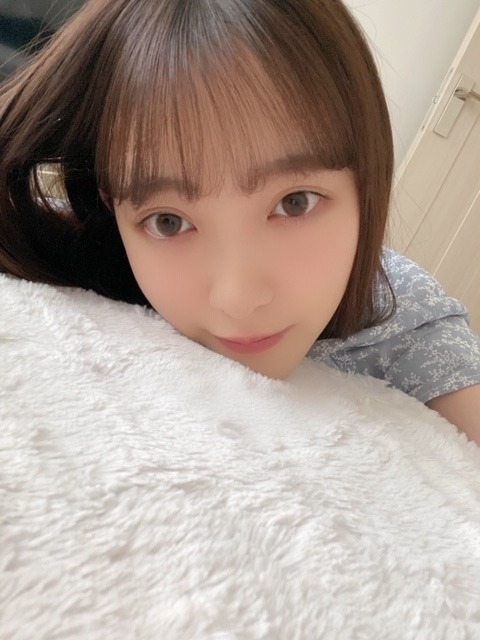

2020/0505Tue7
もう半袖でもいいかなって
思ってきました
こんにちは
堀未央奈です☺︎


半袖は早いですかね〜？
そうめんも早いかな？
あ、とうもろこしは食べました
夏は結構すきです
フジファブリックさんのブルー
は、曲もMVも大好きで
ああいう夏過ごしたかったなって思います
今世では無理なので
生まれ変わったらしたいと思います

今日5月5日で
デビュー7周年を迎えました!
いつもありがとうございます(o^^o)
プリンシパルでのお披露目...
今でも鮮明に覚えています
緊張したなぁ
髪長かったなぁ
たくさんの事がありましたし
いまでも落ち込む事はあるけど
乃木坂に入って得られたものも
たくさんあって
かけがえのない毎日でした☺︎
お母さんと毎日寝てた子が
1人で寝れるようになり
挑戦することが苦手で平凡を求めていた子が
いろんなことに挑戦して
変わりゆく毎日を楽しめるようになり
人を信頼してもいいことはない期待はしないと
思っていた子が
大切な人達を私は信じていこう
と思えるようになり
ダンスが全然できなかった子が
自主練でもやるくらいダンスが好きになり
些細なことも気にしてしまう思い込みの激しい
ネガティヴな性格も
切り替えてポジティブに持っていけるようになり
人って変われるんだなぁと...
これからも頑張らなきゃ!
今年で24歳になるし
また新たなことにも挑戦していきたいです
がんばりますね♩
今日は、
衣装部屋がご覧の通り汚いので

掃除をしたいと思います
あとはペーパーハウスの続きを見て
恋するジェネレーションの続きを見よう

では!


コメント(529)
7周年おめでとう！！僕は4年前から応援してますが、いつもとても元気もらってます！未央奈ちゃんの活躍をこれからも祈ってます！
インスタで色んなメイク、ファッションあげてくれてすごい嬉しいです。無理しない程度でこれからもお願いします！写真集も楽しみにしてます
半袖は…はやくない？ でも僕は寒がりなので、まだパジャマ冬のを着てます。
次のブログ楽しみにしてます！
もう半袖でも良いと思うよ
僕は七分袖やけどもう半袖にしようと思ってます
デビュー丸7年おめでとうございます
掃除も頑張ってね
写真集の表紙全部素敵だったから、迷ったけどブドウのやつ予約した！届くの楽しみ〜〜
みおなの世界観大好き！
自分は全部見ました
この前家族でそうめん食べましたーもう食べても全然早くなかったですよー！
私は半袖着てるよ!
あと、この前そうめん食べた!!
これからも体調に気をつけて頑張ってね!!
大好き♡♡
最近は初夏の気温なので半袖も着ましたし
そうめんも食べましたしトウモロコシも食べました。
そうめんの美味しい季節がきました。
最近暑いよね…私も半袖で過ごしてる。暑いとそうめんとトマトを食べたくなるなぁ。
デビュー7周年おめでとう！アイドルになってくれて、乃木坂に入ってくれてありがとう。
いつも可愛い未央奈ちゃんに癒されているし、ひたむきに頑張る姿に勇気をもらっています。
見た目や考え方に憧れるとともに、昔はそうじゃなかった、乃木坂に入って変わったと話す未央奈ちゃんを見ると、私も変わりたいな頑張ろうって思います。
8年目の活動が素敵なものになりますように。
これからもずっと応援しています！
二期生はかわいそうとか言われてましたけど今はそんな言葉が聞こえなくなるくらい7年間頑張ってくれました
本当にお疲れ様でした
そしてこれからも我々ファンだけにあらず色々な人を勇気づけてくれるよう頑張ってください！！
これからも応援し続けていきます！
デビュー7年目おめでとうございます!!
もう7周年かぁ…おめでとう‼
これからもずっと応援していきます‼(^-^)v
衣装部屋の整理頑張って。
私もう4月25日くらいから
半袖だよ〜笑
デビュー7周年おめでとう( ¨̮ )
これからも応援してるよ( ᷇࿀ ᷆ )
7年前は何してたんだろって
考えたら、6歳でしたぁ笑小１かな??
実は中1の私…笑
次の更新も待ってます✩.*˚
そうめんも食べましたd(>∇<；)
めっちゃメイク勉強しないとこんなに可愛くなれないから教えて欲しい、！！
ブログ更新ありがとう！
おれはもう半袖短パンだよ笑
デビュー7周年おめでとうございます！
乃木坂知って未央奈推しになったのは4年前
だけど今まで頑張ってきてる未央奈を見て
俺も頑張ろうって思えることがめっちゃあった
未央奈にめっちゃ感謝してる
これからもずっと応援してる！
がんばれー！
７周年おめでとう！㊗
衣装部屋の掃除頑張ってね!
今日Youtubeで配信される2017真夏の全国ツアー楽しみにしてるね!
これからも応援してるよ!
体調には気をつけてね!
by未央奈推しのブラックコーヒー
僕も最近はもっぱら半袖です笑
そうめんに、とうもろこし、夏ですねぇ
冷やし中華とかトマトとかもいっぱい食べたいです笑
7周年おめでとうございます!!
掃除は終わりましたかね？笑
ではでは。
7年前、まだ乃木坂46を知りませんでした。
後悔！！！(泣)
まぁそれを後悔したところで知らなかったものは知らなかったんだし、今は知ってるんだからそれでいいや！後悔したって仕方ないや！って思ってます。と、ちょこっとだけ無理やりにポジティブに書こうとしているのはこのブログをちゃんと読んだ証です(笑)
元々、ネガティブ思考だったんだけど、最近はだいぶポジティブに変わってきてるんだ～
たぶんこれも、乃木坂が何かしらの影響を与えているのでしょう…というか間違いなく。
こういうのもインフルエンサーっていうのかな？
未央奈と同じように、周りの人には結構恵まれたなぁ～と、時折すごく実感する。
未央奈はじめ乃木坂メンバーだったり、握手会やらツイッターやらで知り合った友人だったり、バイト先の人だったり……いろんな人に恵まれて、ちょっぴり自信を持てるようになりました。
ちょっぴりポジティブになりました。
女の子と話せるようになりました(でも彼女はいません笑)。
まぁ～握手会で話すのはまだ緊張するし得意ではないけどね～
ムリムリ(ヾﾉ・∀・｀)、未央奈を目の前にしたら緊張と神々しい後光で頭の中が未央奈の肌くらい真っ白よ(笑)
その緊張はどうやっても克服できそうにありませんね
人って変われるけど、人って変われないね～
新しいことに挑戦することって大事。
もちろん、今まで得たこと、持ってたことを守ることも大事。
それを守ることができて初めて、挑戦することが意味を持ってくるんだと思う。
あとはモチベーションかな～
結局、何をするにもモチベーションが一番大事だと思うんだよね～
こうなりたいから！とか、好きだから！とか。
好きこそ物の上手なれとも言うじゃん？
だから、好きなことをする、好きなことを極める、それが一番だな～って思う。
それでですね、ちょっと僕も、挑戦したいことがあるんですよ～
新しいことではないんだけれど、一度挑戦して叶わなかったこと、もう一度チャレンジしてみようかなって。
Challengeではない、Rechallengeなるものをしてみようと。
Impossible じゃなくて、I'm possibleだよね！
これ、しっかりと胸に刻んでおきます。
さてさて、最近暖かいというかむしろ暑いくらいだね(笑)
今日は直射日光に当たるとぐで～っとしてしまうような感じ。
もう、半袖でいいです！！！(笑)
今もお掃除中かな？
水分補給はこまめにね～
デビュー７周年おめでとうございます。
半袖でも十分過ごしやすいよ〜
これからも応援します！！
未央奈ちゃん、2期生メンバー推しで 応援してまーす‼︎
プリンシパル公演の最中、二期生がお披露目されていたのは何と2013年のことなのですね。今日は堀さんとかりんさんがお披露目されて七周年。おめでとうございます。
僕はその頃すでに乃木坂46のファンでしたので、毎日運営さんブログを読みながら、シルエットで紹介されるこの二期生さんはどんな人なのだろうと毎日楽しみにしていたことを思い出します。
卒業されたメンバーもいますけれど、今日まで乃木坂46の大切な一員としてがんばってきた堀さんたち二期生の皆さんに、心から拍手を贈ります。これからも一緒に坂を上っていきましょう。
五月に入って、さすがにもう厚手のシャツは着ないなあと思っています。薄手の長袖シャツにするか、思いきって半袖にするか、悩ましい季節です。ぜいたくな悩みですけれどね。
それではまたコメント寄せます。
さらばだ、また会おう！（気球に乗って去りぬ〜）
毎日嬉しいです。
今日は1日半袖でした、もう夏を感じるね
とうもろこしの動画見たよ、食べたくなりました。
デビューから7年おめでとう
自分は7年あっという間に感じるよ
でも堀ちゃんは濃密な7年だったんだね、そりゃ色々大変な世界だもんね
自分の7年なんて堀ちゃんに比べたら内容が全くなし何も変わってない気がするよ。
これからも色々挑戦する堀ちゃんを応援するよ。
では！
私はもう半袖で今日はそうめんを食べました
偶然すぎて面白かったです これからも応援してます
未央奈ちゃん頑張ってくださーい
大好きでーす
最近、本当に暑いですよね〜、僕は最近そうめんを食べたよ！
Twitterにあげていた、「もぐ未央奈」最高でした！ただ、とうもろこしを食べているだけなのに可愛いすぎて何回も見ました！
そして、デビュー7周年おめでとうございます！堀ちゃんは向上心があって、研究熱心で本当に凄いなと思います！
これからもずーっと堀ちゃんを応援し続けます！
堀ちゃん！体調には気をつけてね！
み〜おな、好き、好き、好ーき！
今日草むしりしたよ〜
暑かったから大変だった、
昨日、地震だいじょぶだった？
じゃバーイ
チャァオ～～!☆彡
みおちゃん、こんにちは～～～⤴️⤴️❕❤️❤️❤️❤️❤️❇️❇️❇️❇️❇️笑顔❇️❇️❇️
ん！？こんばんは～だぁ❕❤️❤️❤️❤️❤️❇️❇️❇️笑顔
ブログ更新ありがとうございます❕❤️❤️❤️❤️❤️❇️❇️❇️笑顔
いつも～みおちゃんのブログを読むのが、楽しみです❕❤️❤️❤️❤️❤️❇️❇️❇️笑顔
今日おいら、朝から歯が痛くて痛くて
「今日仕事が終わったら、絶対に歯医者に行くぞ～～⤴️⤴️❕」 ・・・
と、思って家に帰ってきてから何気にカレンダーを見たら～～・・・
ゴールデンウィークだった❕笑笑
・・歯医者さん、休みだぁ～～⤴️⤴️❕泣
なので、金曜日まで・・
我慢です❕笑
きのうも(2)、今日も(3)、明日(4～5)も
続々と見たことない新商品対応なので、夢でうなされそうです❕泣笑
明日、気をなんとか持ちこたえます❕笑顔
それでは～みおちゃん頑張りましょ～～⤴️⤴️❕❤️❤️❤️❤️❤️❇️❇️❇️笑顔
またねぇ～～⤴️⤴️❕❤️❤️❤️❤️❤️笑顔
(σ≧▽≦)σ❤️❤️❤️❇️❇️❇️
❇️❇️おすまし！⚜️❇️⭐彡
セブンイレブン？ロト７。
うっふん、うっふんいい気分♪
セブンイレブン いい気分♪
そしてやっぱり ズッキュン❤
なるほど、７周年の７。
とうもろこしの動画視ましたよ。
札幌だと、夏になると大通公園でとうきびワゴンが出るんですが、今年はどうなのかな……。
とうきびワゴン→とうきびを、焼いたり、茹でたらで売ってる屋台みたいなの。
あと、とうもろこしの事を【とうきび】っていうかは、出身で判れると思う。。
僕は、主にとうきび呼び。個人的予想は、２期生ではきいちゃんは【とうきび】とも呼びそうだし、新内さんもなんとなく使いそう。蘭世ちゃんは独特な、、←おい！
４期だと、金川ちゃんは間違いなく【とうきび】レイちゃん、ゆりちゃんは、nativeにcornだな。
３期からは、なんとなく久保ちゃんが使った事ありせう。
たぶん、北海道～東北生まれが【とうきび】呼びなのかな？
あ！いっけね(ﾉ∀`)とうきびだけで長文に。
札幌も昨日まで数日間温かかったんだけど、今日は一転肌寒い。
そして、最後におまけ。↓
今日は、モト冬木さん、デーブ・スペクターの誕生日でもある。
そして、デビュー7周年おめでとう
堀ちゃんと共に僕も大人になり23日に21歳になります。
お互い頑張って僕も大人になってきました。
これからも、一緒に頑張ろう！！
はやく、握手会行きたいなーー
もちろん堀レーンずっといます
またねね
ようちゃんマン
前回も同じ水色のワンピース着てたけど、どこのブランドですか？かわいいので、欲しいなって思って！
まだ大人に成ってない年頃 でも今は立派なレディで先輩メンバーです 本当に成長を見守るファンは
嬉しいですね 楽しいですね
乃木坂に入ってくれてありがとございますm(*-ω-)m
これからも応援し続けます(握手会とか行ったことないけど笑 いつになってでも絶対行く)
ちなみに自分はもう半袖です笑
もう暑いし半袖でいいと思いますよー
これからも無理せず頑張ってください
(ロング派なのでもうちょいそのままでもw)
半袖、、アリだね( *・ω・)ノw
俺もとうもろこし食べたくなってきました。未央奈ママに追加でもう１本茹でるのお願いしといてーw
それにしても、もぐもぐ未央奈シリーズ毎日でも見てられます。
次はそうめん編かな？w
7周年おめでとう！
24歳なるんだー、まだまだこれからだね！
新しいことに挑戦とか勇気のいることだと思うけど未央奈らしく頑張ってね！d(^-^)
でわわー
整理しててすごいと思う。
コメントする